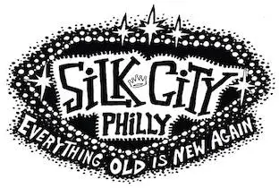
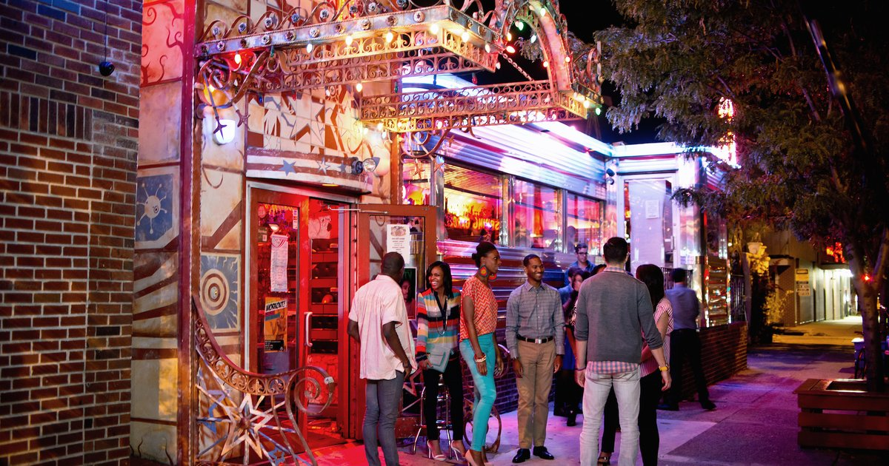
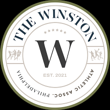
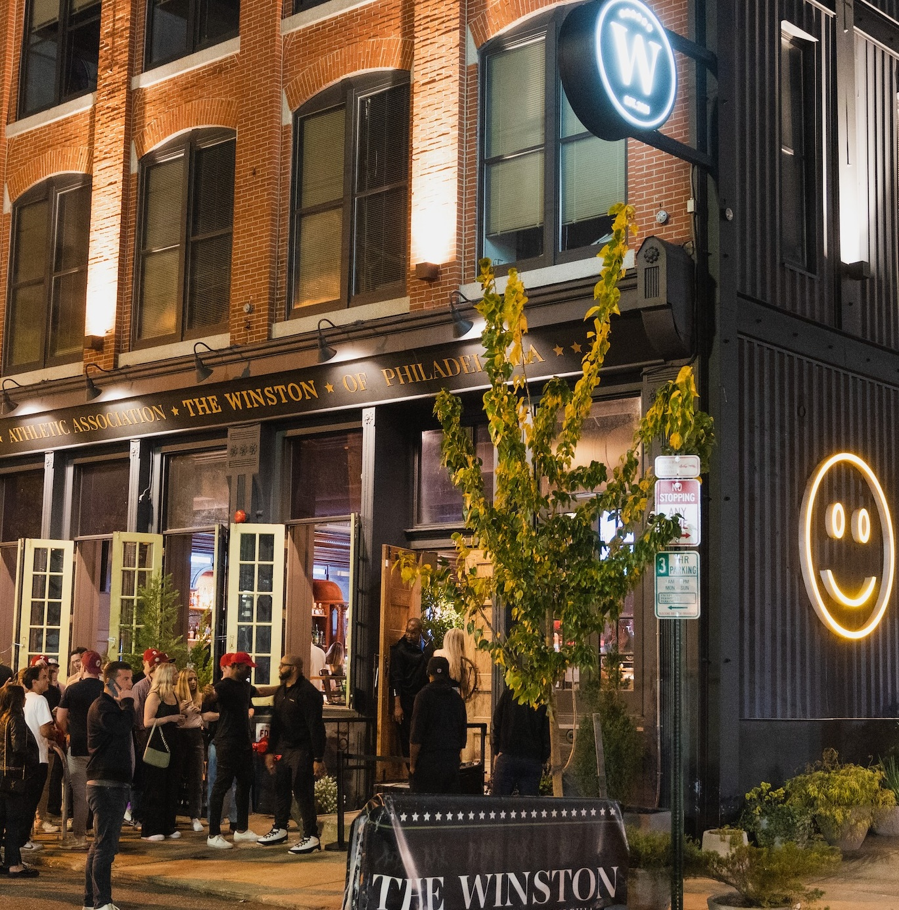
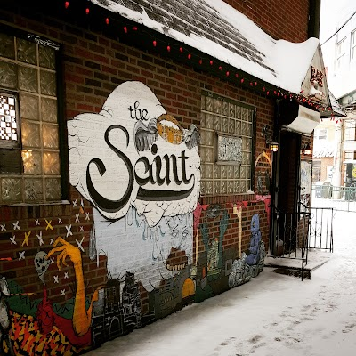
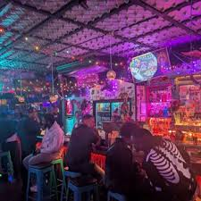

When we think of nightlife, parties, and trendy events we often consider major cities like New York, Miami, and LA. These places are known to "never sleep" and events can be found anyday and anytime. As great as these cities are, they've become too main stream and unfortunately as result of their popularity and success, other major cities like Philadelphia are overlooked. Philly is full of open-format DJs that carefully curate events to ensure fun filled nights with memories that keep you coming back each weekend.





